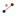
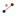

Segment[Point A, Point B]: Creates a segment between two points A and B.
Segment[Point
A, Number a]: Creates a segment with length a and starting point A.
Note: The endpoint of the segment is created
as well.
Note: Also see
tools  Segment between Two Points and  Segment with Given Length from Point
Segment between Two Points and  Segment with Given Length from Point